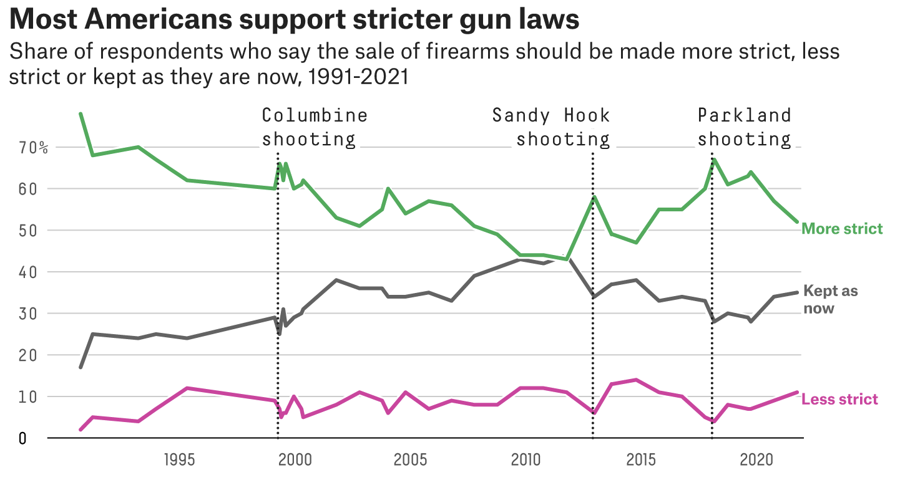
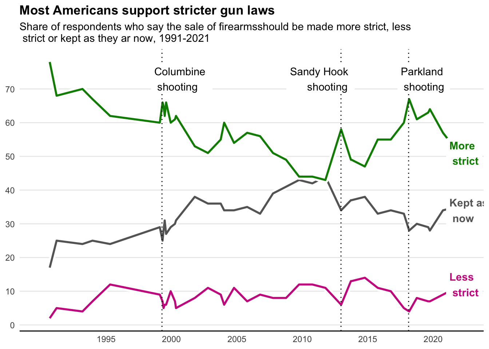

library(dplyr)
Attaching package: 'dplyr'The following objects are masked from 'package:stats':
filter, lagThe following objects are masked from 'package:base':
intersect, setdiff, setequal, unionlibrary(ggplot2)The data comes from: https://news.gallup.com/poll/1645/guns.aspx The figure comes from: https://fivethirtyeight.com/features/support-for-gun-control-will-likely-rise-after-uvalde-but-history-suggests-it-will-fade/ This is the original figure: 
Attaching package: 'dplyr'The following objects are masked from 'package:stats':
filter, lagThe following objects are masked from 'package:base':
intersect, setdiff, setequal, unionHere are the methods I used to try to replicate the above figure. While it is not a perfect replicate, I am proud of the work I have put forth. I used StackOverflow to help guide me whenever I could not think of a solution or did not know what function to use.
# importing the data
raw1 <- readxl::read_xlsx("data/Raw_Data.xlsx")
# viewing the data
dplyr::glimpse(raw1)Rows: 40
Columns: 5
$ Date <chr> "2022 Oct 3-20", "2022 Jun 1-20", "2021 Oct 1-19", "2020…
$ `More Strict` <dbl> 57, 66, 52, 57, 64, 63, 61, 67, 60, 55, 55, 47, 49, 49, …
$ `Less Strict` <dbl> 10, 8, 11, 9, 7, 7, 8, 4, 5, 10, 11, 14, 13, 13, 6, 11, …
$ `Kept as Now` <dbl> 32, 25, 35, 34, 28, 29, 30, 28, 33, 34, 33, 38, 37, 37, …
$ `No Opinion` <chr> "1", "*", "1", "*", "1", "1", "2", "1", "1", "1", "*", "…# making the data into a date format
data1 <- raw1 %>%
dplyr::mutate(Date = gsub("\\-.*","",Date),
Date = as.Date(Date,format="%Y %b %d"),
# making sure all data is class c(double, numeric)
`No Opinion` = as.numeric(`No Opinion`))Warning: There was 1 warning in `dplyr::mutate()`.
ℹ In argument: `No Opinion = as.numeric(`No Opinion`)`.
Caused by warning:
! NAs introduced by coercionRows: 40
Columns: 5
$ Date <date> 2022-10-03, 2022-06-01, 2021-10-01, 2020-09-30, 2019-10…
$ `More Strict` <dbl> 57, 66, 52, 57, 64, 63, 61, 67, 60, 55, 55, 47, 49, 49, …
$ `Less Strict` <dbl> 10, 8, 11, 9, 7, 7, 8, 4, 5, 10, 11, 14, 13, 13, 6, 11, …
$ `Kept as Now` <dbl> 32, 25, 35, 34, 28, 29, 30, 28, 33, 34, 33, 38, 37, 37, …
$ `No Opinion` <dbl> 1, NA, 1, NA, 1, 1, 2, 1, 1, 1, NA, 1, 1, 2, 2, 2, 2, 1,…# plotting data
ggplot(data1) +
# draws line and outline for "Less strict" responses
geom_line(aes(x=Date,y=`Less Strict`),size=3,color="#FFFFFF") +
geom_line(aes(x=Date,y=`Less Strict`),size=1,color="maroon3") +
# draws line and outline for "Kept as now" responses
geom_line(aes(x=Date,y=`Kept as Now`),size=3,color="#FFFFFF") +
geom_line(aes(x=Date,y=`Kept as Now`),size=1,color="#666666") +
# draws line and outline for "More strict" responses
geom_line(aes(x=Date,y=`More Strict`),size=3,color="#FFFFFF") +
geom_line(aes(x=Date,y=`More Strict`),size=1,color="green4") +
# adds verticle lines for mass shooting events
geom_vline(xintercept=as.Date("1999-04-10"),linetype=3) +
geom_vline(xintercept=as.Date("2012-12-14"),linetype=3) +
geom_vline(xintercept=as.Date("2018-02-14"),linetype=3) +
# gets rid of grey background
theme_minimal() +
# allows for x-axis manipulation and titling
scale_x_date(limits=as.Date(c("1990-01-01","2022-04-01")),
breaks=as.Date(c("1995-01-01","2000-01-01","2005-01-01",
"2010-01-01","2015-01-01","2020-01-01")),
labels=c("1995","2000","2005","2010","2015","2020")) +
# allows for y-axis manipulation and titling
scale_y_continuous(breaks = c(0,10,20,30,40,50,60,70)) +
# adds the figure title
labs(title="Most Americans support stricter gun laws",
subtitle="Share of respondents who say the sale of firearmsshould be made more strict, less \n strict or kept as they ar now, 1991-2021") +
# removes axes titles
theme(axis.title.x=element_blank(),
axis.title.y=element_blank(),
plot.title=element_text(face="bold"),
# removes the legend
legend.position="none",
# gets rid of minor gridlines and x-axis major gridlines
panel.grid.minor=element_blank(),
panel.grid.major.x=element_blank(),
panel.border=element_blank(),
# defines x-axis with bold line
axis.line.x=element_line(size=0.5, linetype = "solid")) +
# labels the verticle lines representing mass shooting events
geom_label(aes(x=as.Date("1998-06-10"),label="Columbine \n shooting",
y=73),fill="#FFFFFF",label.size=NA,hjust=0) +
geom_label(aes(x=as.Date("2012-12-14"),label="Sandy Hook \n shooting",
y=73),fill="#FFFFFF",label.size=NA,hjust=0.8) +
geom_label(aes(x=as.Date("2017-04-14"),label="Parkland \n shooting",
y=73),fill="#FFFFFF",label.size=NA,hjust=0) +
# names the lines based on responses
geom_label(aes(x=as.Date("2021-01-01"),label="More \n strict",
y=51),fill="#FFFFFF",color="green4",label.size=NA,hjust=0,
fontface="bold") +
geom_label(aes(x=as.Date("2021-01-01"),label="Less \n strict",
y=12),fill="#FFFFFF",color="maroon3",label.size=NA,hjust=0,
fontface="bold") +
geom_label(aes(x=as.Date("2021-01-01"),label="Kept as \n now",
y=34),fill="#FFFFFF",color="#666666",label.size=NA,hjust=0,
fontface="bold")Warning: Using `size` aesthetic for lines was deprecated in ggplot2 3.4.0.
ℹ Please use `linewidth` instead.Warning: The `size` argument of `element_line()` is deprecated as of ggplot2 3.4.0.
ℹ Please use the `linewidth` argument instead.Warning: Removed 2 rows containing missing values (`geom_line()`).
Removed 2 rows containing missing values (`geom_line()`).
Removed 2 rows containing missing values (`geom_line()`).
Removed 2 rows containing missing values (`geom_line()`).
Removed 2 rows containing missing values (`geom_line()`).
Removed 2 rows containing missing values (`geom_line()`).